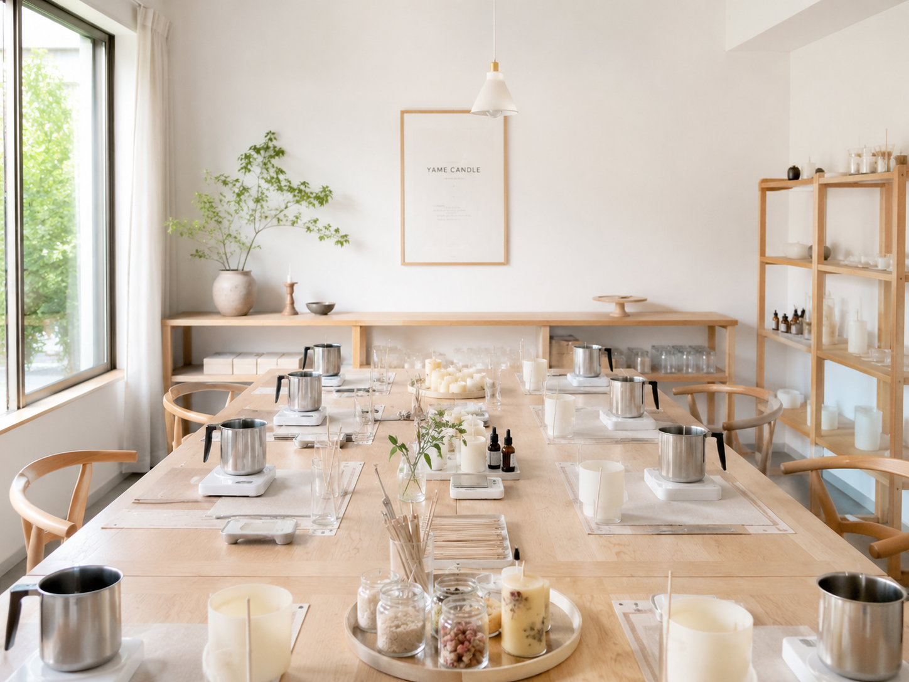
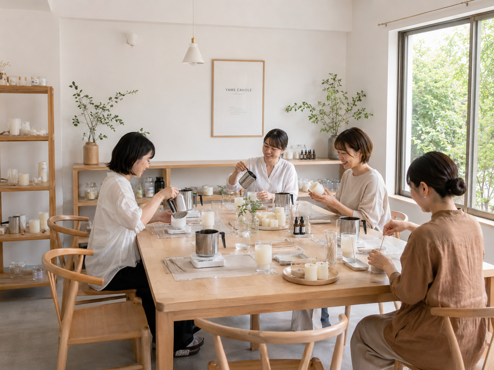
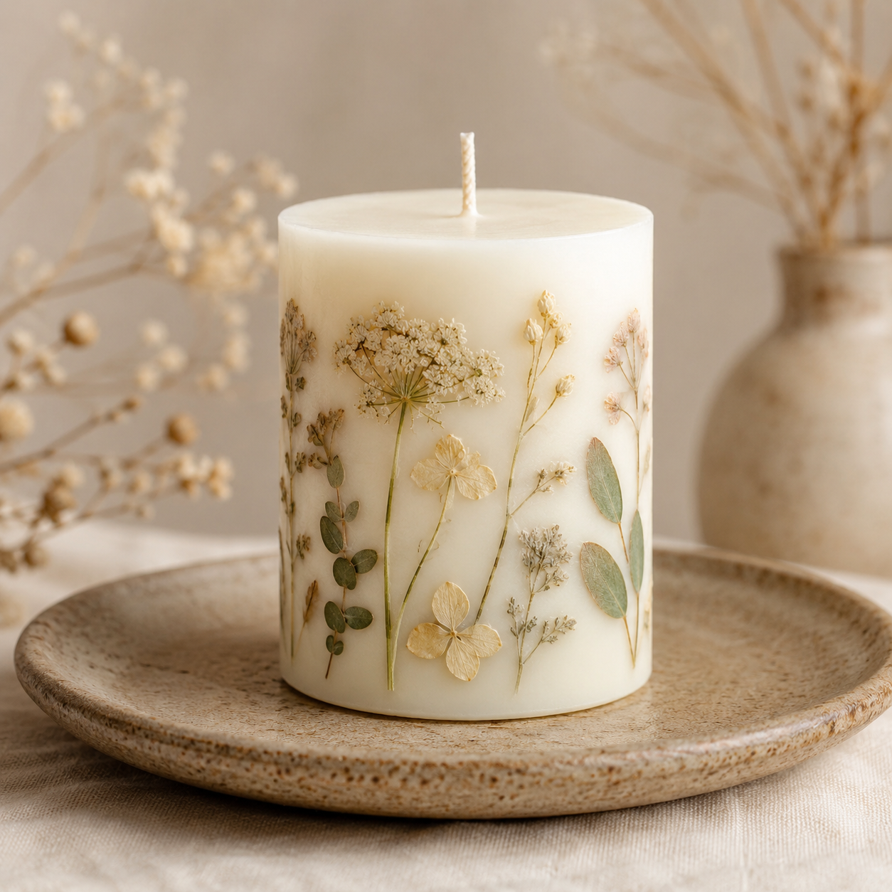

For beginners
1day Candle Lesson
基本のワックスを使い、色と香りを選んで小さなアロマキャンドルを制作します。
- 時間
- 約90分
- 料金
- 4,400円（税込）
- 定員
- 1〜4名

1dayから参加できる、初心者向けキャンドルレッスン。
香り・色・花材を選んで、自分らしく仕上げる制作時間。
Instagram DMまたはメールで、希望日を気軽に相談できます。
About atelier
Yame Candleは、福岡・八女の静かな時間に寄り添う小さなキャンドルアトリエです。ドライフラワーとやさしい香りに包まれた空間で、初めての方にもわかりやすく制作をサポートします。
自然の色、季節の花材、火を灯す前のワクワク。完成品を眺めるだけでなく、手を動かして作る時間そのものを楽しめる教室を目指しています。

Lesson
八女の小さなアトリエで、月に数回レッスンを開いています。道具の使い方から仕上げまでTakaがそばでサポートします。

Small class
おひとり参加、ご友人同士、親子での参加も歓迎です。制作後は灯し方やお手入れ方法もお伝えします。
For beginners
基本のワックスを使い、色と香りを選んで小さなアロマキャンドルを制作します。
Flower craft
ドライフラワーを閉じ込めた、飾っても灯しても楽しめるボタニカルキャンドルを作ります。
Seasonal limited
季節の花材やイベントに合わせた限定デザインを、月替わりで楽しめるワークショップです。
Reservation
気になるレッスンが決まったら、Instagram DMまたはメールで希望日をご相談ください。
1day、ボタニカル、季節のワークショップから作りたい内容をお選びください。
参加人数と希望日時をお知らせください。空き状況を確認してご案内します。
香りと色を選びながら制作します。完成したキャンドルは当日お持ち帰りいただけます。
Works
レッスンで作れる雰囲気の参考にもなる、Yame Candleの作品たちです。





Access
詳しい場所はご予約確定後にご案内します。八女散策とあわせて、ゆっくりお越しください。

FAQ
はい。道具の使い方から仕上げまでゆっくり進めますので、初めての方も安心してご参加ください。
準備の都合上、できるだけ3日前までにInstagram DMまたはメールでご相談ください。
必要な道具はこちらでご用意します。汚れが気になる方はエプロンをご持参ください。
駐車場は1〜2台分あります。お支払いは当日現金またはPayPayでお願いしています。